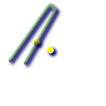

ST_ClosestPoint — g1上の，g2に最も近い二次元ポイントを返します．最短線の一つ目のポイントです．
geometry ST_ClosestPoint(geometry
g1, geometry
g2);
 ポイントとラインストリングの間の最短は，ポイントそのものです． ラインストリングとポイントの間の最短は，ラインストリング上の最短となるポイントです．
SELECT ST_AsText(ST_ClosestPoint(pt,line)) AS cp_pt_line, ST_AsText(ST_ClosestPoint(line,pt)) As cp_line_pt FROM (SELECT 'POINT(100 100)'::geometry As pt, 'LINESTRING (20 80, 98 190, 110 180, 50 75 )'::geometry As line ) As foo; cp_pt_line | cp_line_pt ----------------+------------------------------------------ POINT(100 100) | POINT(73.0769230769231 115.384615384615)
| ポリトンA上の，ポリゴンBへの最短点
SELECT ST_AsText(
ST_ClosestPoint(
ST_GeomFromText('POLYGON((175 150, 20 40, 50 60, 125 100, 175 150))'),
ST_Buffer(ST_GeomFromText('POINT(110 170)'), 20)
)
) As ptwkt;
ptwkt
------------------------------------------
POINT(140.752120669087 125.695053378061)
|